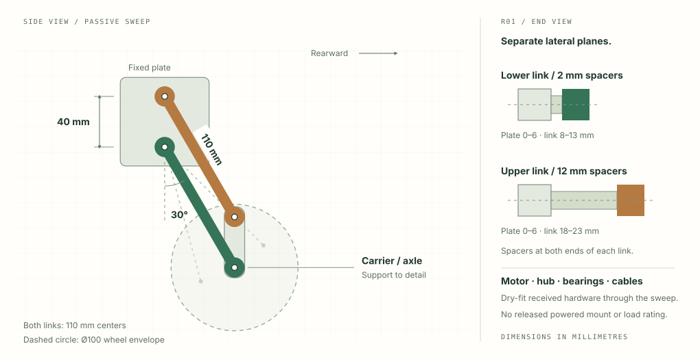
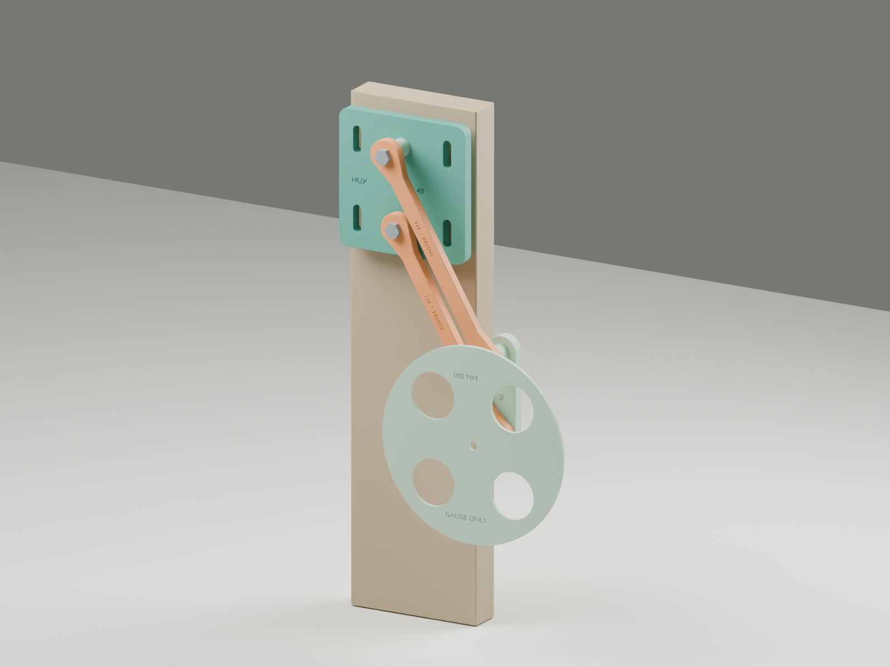

V1-PROOF / From parts to evidence
Mechanical testing.
Measure the parts. Move the linkage. Keep a record of what happens.
01 / The first fixture
One passive leg, in detail.


- Axle rearward
- 55.00 mm
- Axle below pivot
- 95.26 mm
- Link centers
- 110 mm
Hand moved, power disconnected. Confirm the prints match R01 before using the spacer stack. Motor mounts, hub/bearing support and load capacity still need qualification. Assembly guide ↗ · Open the layout sheet ↗

02 / The test route
Earn the next step.
Record each trial. Advance only with the evidence for the whole stage.
- Inspect → assemble → hand sweep → packaging → repeatability → qualified powered tests. Open the first checklist ↗
03 / Your session notebook
What did you observe?
Saved on this device. Export a copy to keep it or bring it back to this chat for the shared project record.
Journal backup
Download the file, or select and copy the backup text to keep with your photos and logs.
04 / The dated record
Every test leaves a trail.
Latest first. Shared project records and your device drafts keep their own labels.
Motor/drivers received · parts printed
The mechanical fit session is ready. No measured test results are reported.
No trials recorded yet. Start with inspection and passive fit.